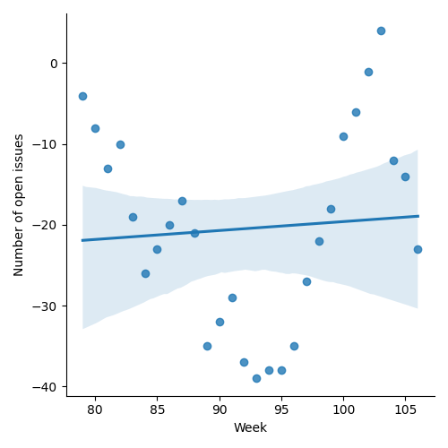
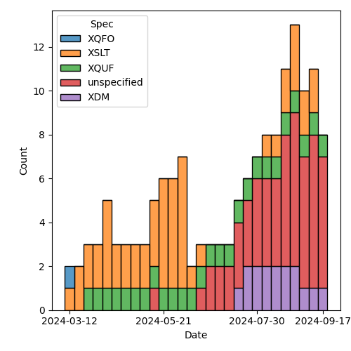
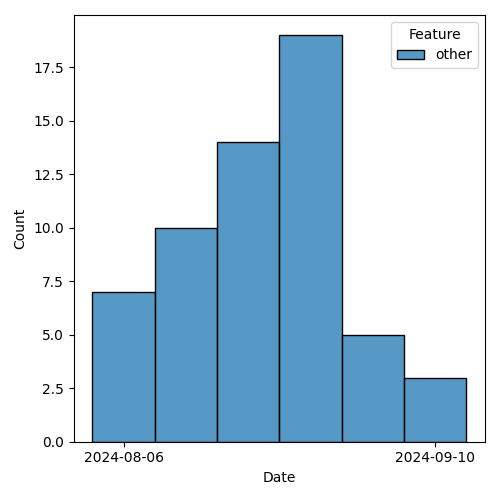

QT4 CG Meeting 091 Minutes 2024-09-24
Meeting index / QT4CG.org / Dashboard / GH Issues / GH Pull Requests
Table of Contents
- Draft Minutes
- Summary of new and continuing actions
[0/7] - 1. Administrivia
- 2. Technical agenda
- 2.1. PR #1429: Align type tests
- 2.2. PR #1430: 1427 Add element-number function
- 2.3. PR #1433: 1422 fn:hash: Revision
- 2.4. PR #1435: 1421 fn:unix-time: Revisions
- 2.5. PR #1436: 1323 Function parameters names: $href → $uri
- 2.6. PR #1437: 1325 Variadic System Functions limited to `fn:concat`
- 2.7. PR #1439: 1235 Function Identity: Treating function items with identical bodies
- 2.8. PR #1453: Fix typo in load-xquery-module example
- 3. Any other business
- 4. Adjourned
Draft Minutes
Summary of new and continuing actions [0/7]
[ ]QT4CG-080-07: NW to update the build instructions in the README[ ]QT4CG-082-02: DN to work with MK to come to agreement on the fn:ranks proposal[ ]QT4CG-088-01: NW to consider how best to add a dedication to MSM.[ ]QT4CG-088-04: [Someone] needs to update the processing model diagram needs vis-a-vis the static typing feature[ ]QT4CG-089-01: CG to draft a PR that attempts to resolve the operators described in #755 to a smaller number of orthogonal choices.[ ]QT4CG-091-01: MK to make sure there’s an editorial note about parameter renaming.
1. Administrivia
1.1. Roll call [11/12]
[X]David J Birnbaum (DB)[X]Reece Dunn (RD)[ ]Sasha Firsov (SF)[X]Christian Grün (CG)[X]Joel Kalvesmaki (JK) [:05-][X]Michael Kay (MK)[X]Juri Leino (JLO)[X]John Lumley (JWL)[X]Dimitre Novatchev (DN)[X]Wendell Piez (WP)[X]Ed Porter (EP)[X]Norm Tovey-Walsh (NW). Scribe. Chair.
1.2. Accept the agenda
Proposal: Accept the agenda.
Accepted.
1.2.1. Status so far…
These charts have been adjusted so they reflect the preceding six months of work.

Figure 1: “Burn down” chart on open issues

Figure 2: Open issues by specification

Figure 3: Open issues by type
1.3. Approve minutes of the previous meeting
Proposal: Accept the minutes of the previous meeting.
Accepted.
1.4. Next meeting
This next meeting is planned for 1 October. Any regrets?
None heard.
1.5. Review of open action items [2/7]
(Items marked [X] are believed to have been closed via email before this agenda was posted.)
[ ]QT4CG-080-07: NW to update the build instructions in the README[ ]QT4CG-082-02: DN to work with MK to come to agreement on the fn:ranks proposal[ ]QT4CG-088-01: NW to consider how best to add a dedication to MSM.[X]QT4CG-088-03: MK to add an example of duplicate function-annotations being returned.[ ]QT4CG-088-04: [Someone] needs to update the processing model diagram needs vis-a-vis the static typing feature[ ]QT4CG-089-01: CG to draft a PR that attempts to resolve the operators described in #755 to a smaller number of orthogonal choices.[X]QT4CG-090-01: MK to add an example offn:element-numberthat does multi-part numbering
1.6. Review of open pull requests and issues
1.6.1. Blocked
1.6.2. Merge without discussion
The following PRs are editorial, small, or otherwise appeared to be uncontroversial when the agenda was prepared. The chairs propose that these can be merged without discussion. If you think discussion is necessary, please say so.
- PR #1447: 1446 Rephrase conformance rule on xs:dateTime limits
- PR #1444: Implement improvement to bibligraphy entry for IEEE 802.3
- PR #1438: 1322 fn:collation-available (editorial)
- PR #1434: 1373 XQFO: Editorial
Proposal: merge without discussion.
Accepted.
2. Technical agenda
2.1. PR #1429: Align type tests
See PR #1429
- JLO attempts to present the draft, but the diff is out-of-date
JLO will rebase and we’ll look next week.
2.2. PR #1430: 1427 Add element-number function
See PR #1430.
- MK shows us the changes he made in response to comments last week.
- CG: Last example is pretty helpful. This is a less-common challenge in XQuery.
- DN: What does ‘recursive hierarchy’ mean?
- MK: Sections nested in sections in sections.
- NW: That’s not an uncommon way of describing nested structures. That’s what
DocBook says about the
sectionelement, for example. - WP asks about the
self()expression. - MK: That’s new.
Proposal: accept this PR.
Accepted.
2.3. PR #1433: 1422 fn:hash: Revision
See PR #1433.
- CG introduces the PR.
- CG: I promoted the algorithm to an explicit parameter.
- … And I fixed one erroneous example.
- JWL: So you wouldn’t have options if you didn’t want to set the algorithm.
Some discussion of promoting the algorithm. NW thinks its a good idea.
- DN: I think this is a good change. In other functions where there’s an options parameter with only one key, we could make this change.
Proposal: accept this PR.
Accepted.
2.4. PR #1435: 1421 fn:unix-time: Revisions
See PR #1435.
- CG introduces the PR.
- CG: Renamed it from
fn:unix-timetofn:unix-dateTime. The other change is that we only allow non-negative integers. - MK: Why did we limit it to non-negative integers?
- CG: The POSIX standard only talks about 64 bit (unsigned) integers.
Proposal: accept this PR.
Accepted.
2.5. PR #1436: 1323 Function parameters names: $href → $uri
See PR #1436.
- CG introduces the PR.
- CG: This is about making the href/uri parameter names more consistent.
- … It seemed ambiguous to me, there’s no explanation for the different names.
- NW: I prefered
$hreffor some, but I’m not going to fuss. - MK: I’m concerned that in popular parlance we speak of “relative URIs” when the technical term is “relative reference” which isn’t a URI.
- DN: I feel strongly that we should make this uniform, but in the already existing versions we have parameters with these names.
- CG: It’s never mattered before because we couldn’t address parameters by name,
but now you can.
- … We renamed a bunch of parameters, so now we have a mixture of href and uri.
- DN: But that could be confusing because users may have read earlier versions
of the specification.
- … Perhaps we need to have a short editorial note about the fact that the parameters have been renamed.
- JLO: I’d like to stick with
$href. - CG: What about
fn:collection. It uses$urithat was one of the questions. - JLO: I think
$hrefwould be fine forfn:collection. - MK: Collations in principle can be relative references, but it’s strongly discouraged.
- … I’m not sure anyone uses them that way.
- … There are certainly places where we use URIs as names: collections, modules, namespaces.
- … There are some cases where things might be names or collections.
- … We’re trying to decide which ones are supposed to be names and which are supposed to be locations.
Some discussion of relative vs. absolute URIs and where they can be used. Namespace URIs are never made absolute, but some others are.
- WP: If we say
$urithen it’s a URI and if it’s just a reference, it can be a$href. - RD: I wonder if, based one of the comments in the discussion, with using names
like
$uriand$hrefwe’re making parameters names based on the role we expect them to play. Perhaps using names like$valuewould be better. So we aren’t saying$intfor a name. - CG: One of my proposal was to use
$sourceor$inputinstead. - DN: If we seem to not be able to agree on the exact name, maybe a compromise
solution would be to use a neutral name like
$source-reference. And we can say in some note that we’re using a unified name. - RD: I think
$inputor$sourceare reasonable names. But I don’t really have a preference.- … For me, a name like
$source-referenceis too verbose. I quite like something more concise.
- … For me, a name like
Straw poll: $source or $input? $source gets 7 votes, $input gets none.
- MK: Let’s take this back to email.
ACTION: MK to make sure there’s an editorial note about parameter renaming.
2.6. PR #1437: 1325 Variadic System Functions limited to `fn:concat`
See PR #1437.
- CG introduces the PR.
- CG: At the moment,
fn:concat,fn:codepoints-to-stringandfn:distinct-unordered-nodesare variadic.- … I wanted to find a simple answer to the question: why are those variadic?
- … But what rule would we follow?
- … If there’s no rule, maybe we should only use it for
fn:concatwhere it’s needed. - … Then we could come back to the question if we came up with a simple rule.
- … It might be that having an
$optionsparameter onfn:codepoints-to-stringandfn:distinct-unordered-nodeswould be better.
- MK: It’s a valid point. I sort of feel like we introduced variadicy because
fn:concatstands out like a sore thumb. Having introduced it, I thought we could use it to make some functions more useful.- … But it does inhibit extensibilty on those functions in the future.
- … I don’t know what the right answer is.
- JWL: I think it’s more trouble than its worth. I don’t think anyone would be annoyed if we just left it.
- JLO: The arguments that CG just brought up are really useful. I just want to make sure I understand.
- … Is it still the case that in XQuery 4 will allow users to create new variadic functions?
- MK: Yes.
- DN: I think that the change proposed by CG results in more exact definitions. But on the other side, if we have to list two or three different overloads, this will consume a very big space. I am in favor of a compromise, leave them variadic but add a note that you can’t have more than two values. That seems more concise to me.
Chair tries a straw poll. In favor: 4, opposed: 0. So not real consensus here.
Some discussion of DN’s compromise proposal that we limit the variadicity to only a maximum number of arguments.
- CG: I can’t see why we should limit to a specific number.
- RD: The comment was about adding more arguments to codepoints-to-values. If you limited it, you could imagine adding more extensible parameters in the future.
- NW: That didn’t help me.
- CG: We could remove varadicity from these two functions and then come back later to decide which ones should.
- WP: I have to say, as a user, variadicity is a problem. I’d like to think of
fn:concatas an outlier. - RD: Various other vendor functions, in BaseX and MarkLogic for example, are
declared as variadic. The motivation that I had for specifying varadicity was
that it wasn’t defined in the specification.
fn:concatwas just magic.
Take it back to email.
2.7. PR #1439: 1235 Function Identity: Treating function items with identical bodies
See PR #1439.
- CG introduces the PR.
- CG: The current status quo:
| # | Function | Result |
|---|---|---|
| 1 | deep-equal(<a/>, <a/>) |
true() |
| 2 | let $f := fn { <a/> } return deep-equal($f, $f) |
true() |
| 3 | deep-equal(fn { 1 }, fn { 1 }) |
true() or false() |
| 4 | deep-equal(fn { <a/> }, fn { <a/> }) |
false() |
- CG: As you can see there’s inconsistency here.
- … MK proposed some small changes to a few paragraphs.
- … These changes allow the last example to return either
true()orfalse().
CG shows the relevant part 4.5.2.7 Function Identity
- DN: I want to remark that the fact that bodies of two functions are identical doesn’t mean that the functions are the same. Both the body and the signature have to be the same.
- JLO: I just wanted to say that the way it’s written, only the optimizer can decide. That will definitely take dynamic scope into account. I think DN’s concern is addressed.
- MK: I think this text explains the way I’ve always understood the intent.
- … I think this is an editorial improvement.
- DN: No, what JLO said doesn’t address my concerns. It leaves the impression that we have function identity when the bodies are identical which is not true. We can easily add the signature to the definition.
- CG: I read all the rules and I don’t think the changes I’m making are in those areas.
Proposal: accept this PR.
Accepted.
2.8. PR #1453: Fix typo in load-xquery-module example
3. Any other business
- JWL describes some of his recent work with grammars.
- JWL: I’ve been producing iXML grammars for the current state. I’ve got to a
point where I’ve generated both the XQuery and XPath grammars and I’ve run
them over the whole test set. Getting about 50 failures, mostly whitespace and
embedded “-”.s
- … I have a mechanism for generating a grammar from the current state.
- … I’ll publish this to the whole group.
JWL demonstrates the XPath 4.0 grammar parsing some expressions. It can provide the full parse or a reduced parse.
- JWL: This let’s you experiment with minor changes in the grammar to see if it might introduce ambiguities.
JWL demonstrates the XQuery grammar as well.
- JWL: This work is available now at https://johnlumley.github.io/jwiXML.xhtml
- … I’ll put the grammars themselves on my GitHub page.
- … I’ll try to keep up with significant grammar changes.
- RD: Is it possible to integrate this into the build process?
- JWL: Maybe, but some parts of it need to go through the browser.
- MK: In the older specs, fragments of XPath and XQuery code where tagged and there were tests. But we haven’t maintained that.